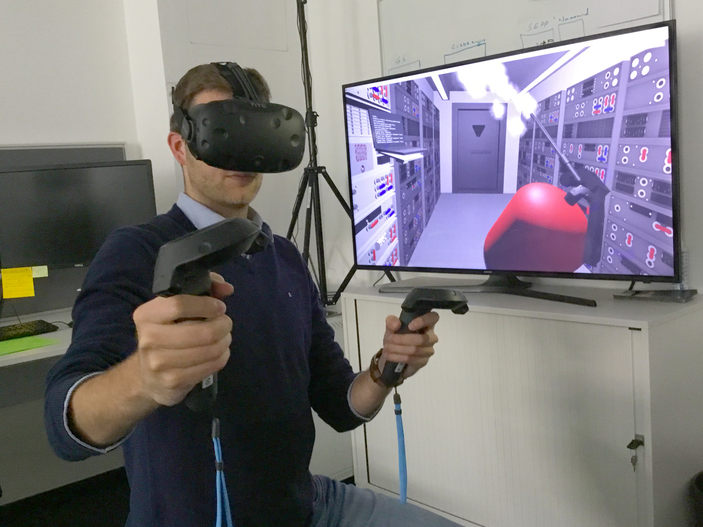

The future of gaming is still unknown but what we do know is there is plenty of development towards virtual reality. After the success of Pokemon GO in 2016, we can definitely see augmented reality being something that developers start to look into for future games.
There is plenty of developers for virtual reality. Some development on virtuality headsets and motion tracking like the Oculus Rift and HTC Vive. Both of these devices allow users to walk around in a virtual world and interact with objects using the controllers provided. There are other developers working on full motion tracking body suits so you could 100% control your avatar or character movement in game. A company named HaptX is working on a glove that actually allow sense of touch in games. When your hand is touched in game it activates sensors in the glove to push on your hand and allow you to really feel the item you are picking up or touching. It also allows you to feel cold and warmth using a hot or cold liquid that is pumped in and out of the glove. The glove also has feedback for when you pick up and squeeze something it actually has pressure like if you were to pick up and squeeze that item in real life.
{kind=link}
As we come closer to full on virtuality, we will start having a hard time determining the difference between games and the real world. Once we develop full-dive technology, the ability to fully insert your mind power into a game, it will really open up capabilities of what can and can not be done in video games. You would no longer need a controller because your mind would be the controller and your abilities in real life with translate into the game and vice versa. If you learn to kickbox in a game you will then also be able to kickbox in real life because it's all muscle memory and because you practiced that in your mind you will then be able to translate it to real life. Full-dive is a long shot from where we are today but it's definitely possible and will probably be the extended future of video games.
Virtual Reality Devices
- Oculus Rift
- HTC Vive
- HaptX Haptic Feedback Glove
- Playstation VR
- Virtuix Omni
- Infinadeck omni-directional treadmill